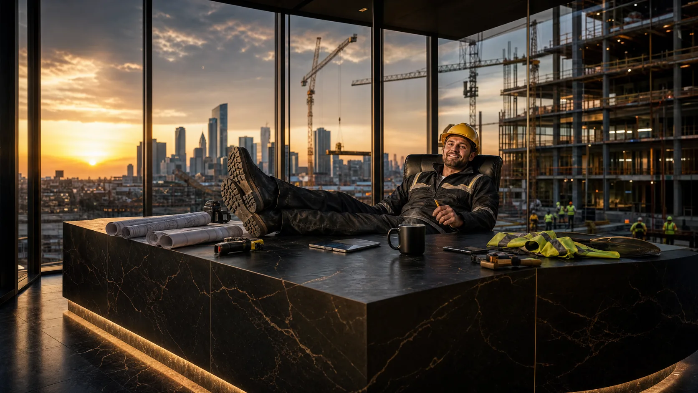

TradeLink · Patro 04
Stavebnictví & řemesla
Vyberte obor v panelu a uvidíte poptávky, zakázky i lidi, kteří k němu patří.
Stavebnictví & řemesla
Krok 1 · Obor
Tady si brzy vyberete svůj obor a uvidíte poptávky a nabídky, které k němu patří.